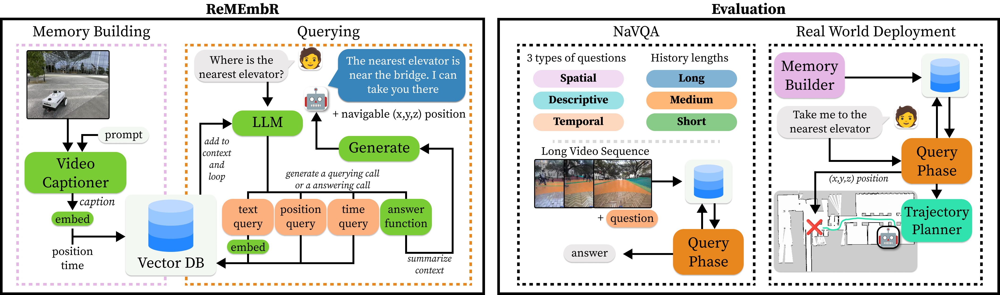
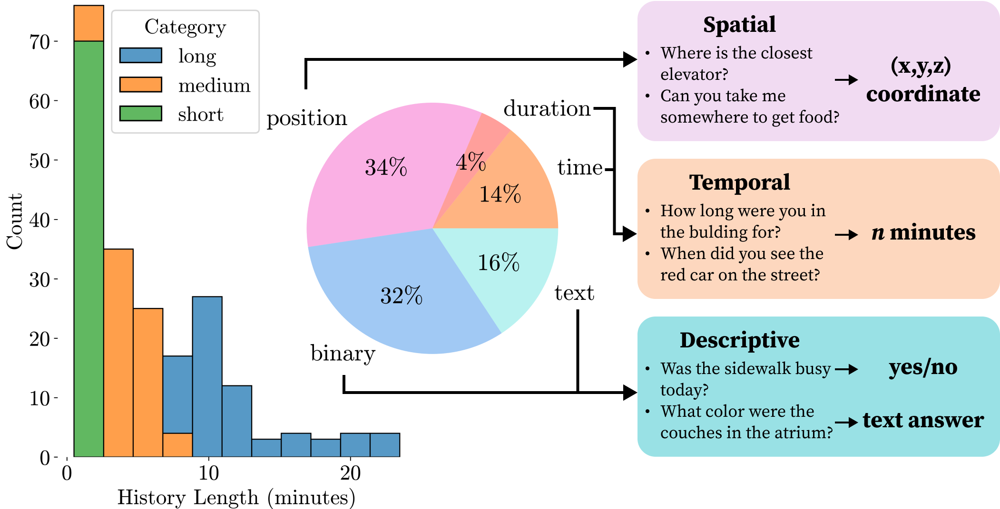
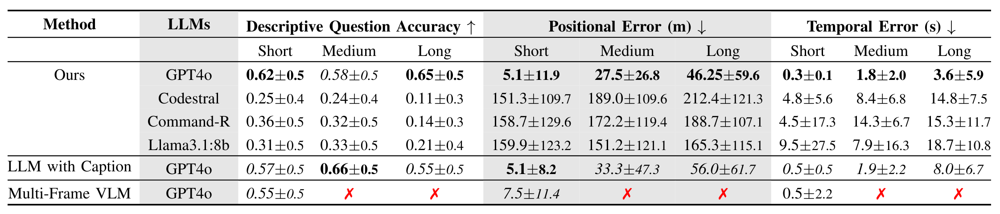

Abstract
Navigating and understanding complex environments over extended periods of time is a significant challenge for robots. People interacting with the robot may want to ask questions like where something happened, when it occurred, or how long ago it took place, which would require the robot to reason over a long history of their deployment. To address this problem, we introduce a Retrieval-augmented Memory for Embodied Robots, or ReMEmbR, a system designed for long-horizon video question answering for robot navigation. To evaluate ReMEmbR, we introduce the NaVQA dataset where we annotate spatial, temporal, and descriptive questions to long-horizon robot navigation videos. ReMEmbR employs a structured approach involving a memory building and a querying phase, leveraging temporal information, spatial information, and images to efficiently handle continuously growing robot histories. Our experiments demonstrate that ReMEmbR outperforms LLM and VLM baselines, allowing ReMEmbR to achieve effective long-horizon reasoning with low latency. Additionally, we deploy ReMEmbR on a robot and show that our approach can handle diverse queries.
Video
Memory Building and Evaluation
We design ReMEmbR with a memory building phase and a querying phase. The memory building phase runs a VILA video captioning model, embeds the caption, then stores the caption embedding, position, and time vectors into a vector database. Then, when a user asks a question, a vector database querying loop starts with an LLM. (Right) Then, we evaluate ReMEmbR on the NaVQA dataset which we construct. NaVQA consists of three types of questions as shown above. Then we deploy ReMEmbR on a robot.

Evaluation Dataset
We introduce the NaVQA dataset, which is composed of 210 examples across three different time ranges up to 20 minutes in length. The dataset consists of spatial, temporal, and descriptive questions, each of which has different types of outputs as shown above.

Results
We compare ReMEmbR to an approach that processes all captions at once and another that processes all frames at once. We find that GPT4o-based approaches perform the best, and that ReMEmbR outperforms the LLM-based method and remains competitive to the VLM-based approach on the Short videos. The Medium and Long videos are too long for the VLM to process, and thus is marked with an ✗.

Deployment
We deploy ReMEmbR on a Nova Carter robot. We run the memory building phase for 25 minutes, and then begin to ask navigation-centric ques- tions The robot successfully handles various instructions, including those with more ambiguous instructions such as going to somewhere with a nice view. However, we found that ReMEmbR often confuses some objects such as soda machines and water fountains, leading to incorrect goals.